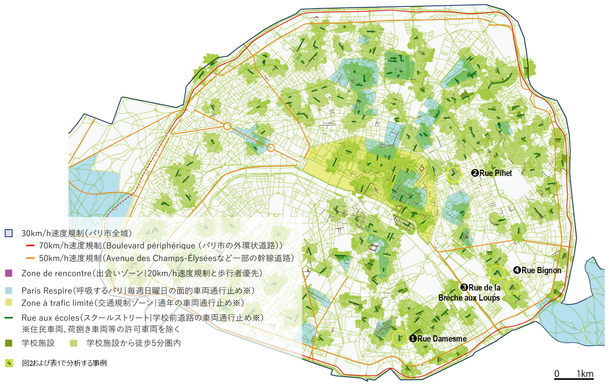
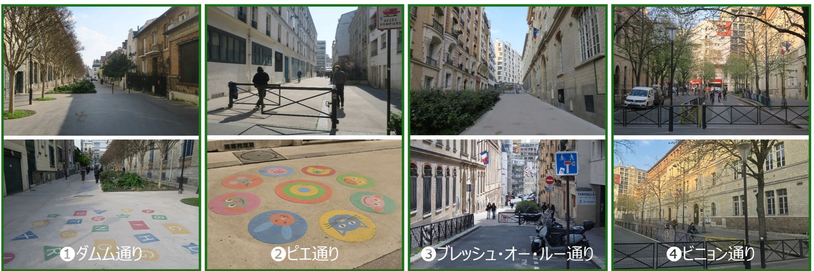
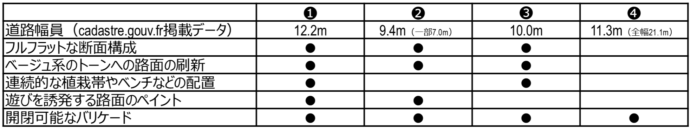

パリのスクールストリート（Rues aux écoles）に学ぶ
子どものために道路をひらくみちづくり
子どもにとっての通学路は、単に学校と家を結ぶだけの「移動の空間」ではなく、友だちと話したり、地域の様子を知ったり、自分で判断して行動するなかで、「社会とのつながり（社交）を育む場」です。日本では、ガードレールの設置や路側帯のカラー舗装などによって通学路の安全性を高める取り組みが進められてきましたが、依然として狭幅員・減速不十分な箇所も多くあります。子どもたちの居場所としての通学路を、地区全体の交通のあり方を見直しながら、いかに実現するか。パリ市では学校前の道路から一般車両を排除し、子どもが安全に過ごせる空間へ再編する「スクールストリート」整備が進められています。単なる交通安全対策に留まらず遊び場の創出、都市の緑化、生活の質の向上にもつながっています。
なぜ学校前の道路を変えるのか
パリでは、誰もがどこからでも、徒歩15分で生活に必要な施設・サービスにアクセスできる「15分都市」の実現にむけて、市全域を対象として、道路・交通の抜本的な見直しが行われています。なかでも学校前の道路は、家から徒歩通学の多いパリの子どもたちにとって日常最も多く利用する公共空間として注目されています。一方、パリでは、多くの学校が歩道の狭い（1m未満も存在する）細街路に立地し、学校前の道路は従前、通過交通や路上駐車の温床になっていました。
そこで、「子どもたちが安心して遊ぶことのできる空間を、子どもたちが最も利用する公共空間である学校前の道路に実現する」ことを標榜して、スクールストリートの取り組みが2021年に開始されました。自動車中心の都市から、人中心、そして将来世代の子ども中心の都市へと都市政策を大きく転換する取り組みとして、市民からも大きな賛同を得つつ、5年間で300箇所以上がスクールストリートに指定されました（図1）。

学校前の道路を歩行者中心の空間にする
スクールストリートでは、幼稚園や小学校の正面の道路を車両通行禁止とし、歩行者中心の空間を実現します。多くの場合、区間の出入り口に、手動で開閉可能なバリケードが設置され、一般車両の通行は禁止されます。緊急車両やごみ収集車、荷捌き車両、沿道住民の車両など、必要な車両のアクセスは、除外規定によって認められています。沿道にガレージや荷捌き駐車場がある場合には区間の途中まで車両進入を認めるなど、状況に応じて柔軟に運用されています。
また、スクールストリートの成功の背景には、学校前の道路のみならず、その周辺の道路も含めて、面的かつ複層的に、交通静穏化を図る交通計画上の工夫があります。具体的には、パリ市全域で30km/hの速度規制が、細街路の多くでは20km/hの速度規制と歩行者優先の交通規則「出会いゾーン」が、パリ市の中心部では、許可車両以外の一般車両の通行規制がそれぞれ適用されています。「まちなかで車両はスピードを出せない」ことを前提とし、スクールストリートに至るまでにも段階的に車両速度が低減するよう、複数の交通規則を重ね合わせ、効果的に交通静穏化を実現しています。
学校前の道路が子どもの居場所になる
パリのスクールストリートの成功事例として、例えば➊ダムム通りでは、歩道と車道の段差が解消され、道路全体がフルフラットな空間として整備されました。路面は明るい色調に変えられ、植栽帯やベンチが配置されているほか、子どもの遊びを誘発するペイントも施されました。道路でありながら、子どもたちが立ち止まり、遊び、安心して過ごせる「広場」のような空間が生まれました（図2）。一方で、すべてのスクールストリートが同じかたちで整備されているわけではありません。狭い通りでは、緊急車両の通行幅を確保するために植栽帯を設けない事例もあります。➍ビニョン通りのように、大規模な舗装改修は行わず、バリケードによる車両進入の排除のみの事例もあります。つまり、パリのスクールストリートは、道路幅員や沿道利用に応じて、「無理のない方法」で道路空間の安全性と利便性を両立している点に特徴があります（表1） 。


市民との合意形成上の工夫としては、最初から大規模な工事を行うのではなく、まずは車両通行を制限する簡易的なゲートを設置し、約6か月の社会実験を通じて、住民や保護者が「車のない学校前の道路」の安全性や交通静穏化を実際に体験できる機会を設定します。小さく試し、学校前の道路を子どもの居場所として少しずつ定着させていき、地域の理解を得ながら、舗装の変更や緑化、ベンチの設置などの恒久的な整備へと進みます。車を通さないこと自体が目的なのではなく、その先に、子どもが安心して歩き、立ち止まり、遊ぶことのできる公共空間をつくることが目指されています。
実践への示唆：通学路を「通る道」から「過ごせる道」へ
日本の通学路整備では、これまで交通事故を防ぐための安全対策が中心でした。ガードレール、カラー舗装、注意喚起の看板などは重要な対策です。しかし、パリのスクールストリートから学べるのは、通学路を単なる「安全な通路」としてではなく、子どもが安心して滞留できる「豊かな公共空間」として捉え直す視点です。そのためには、交通計画だけでなく、ランドスケープ、建築、教育、地域活動など、多様な分野が連携することも求められます。
通学路を、車から子どもへ。移動のための空間から、まちの中で子どもが過ごせる居場所へ。
パリの挑戦は、日本のこれからの通学路づくりにも大きなヒントを与えてくれます。